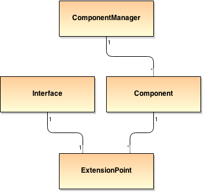
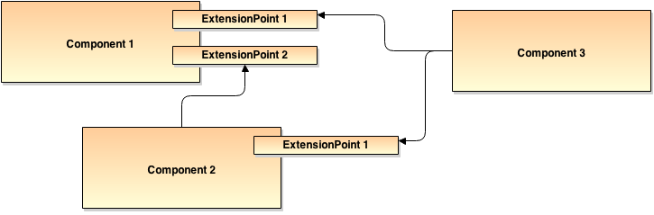
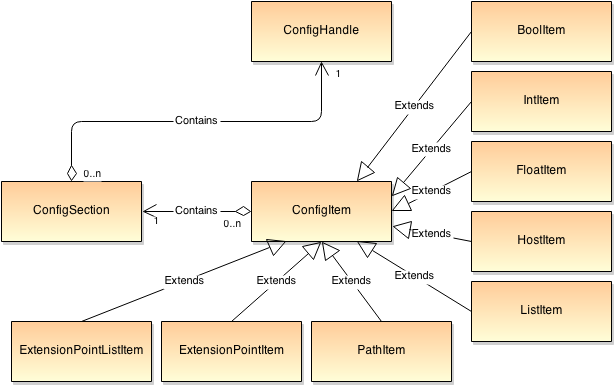
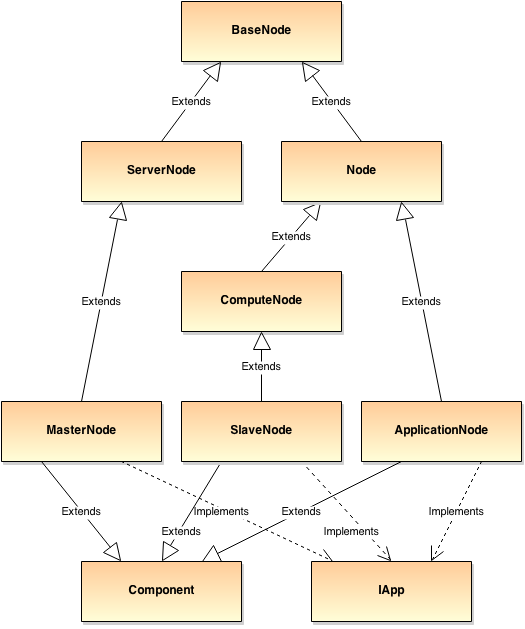
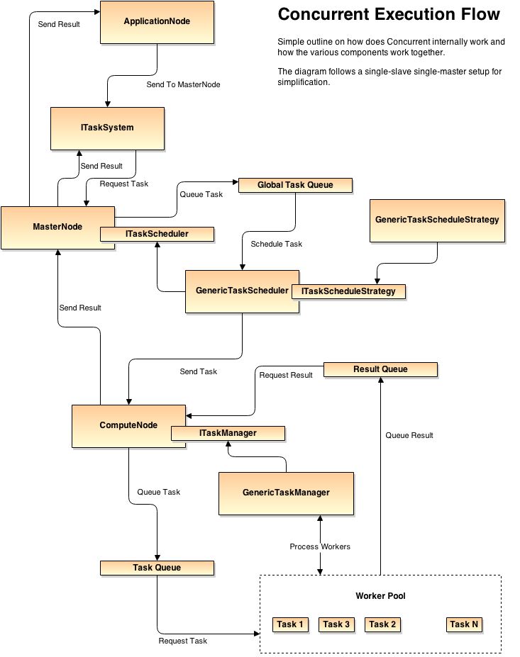
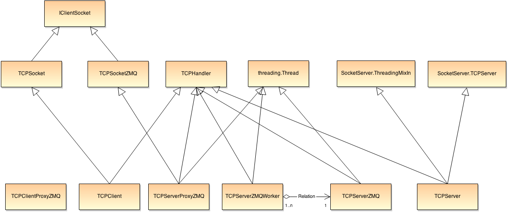

Concurrent
Distributed task system in Python
Created by Moritz Wundke
Introduction
Concurrent aims to be a different type of task distribution system compared to what MPI like system do. It adds a simple but powerful application abstraction layer to distribute the logic of an entire application onto a swarm of clusters holding similarities with volunteer computing systems.
Introduction cont'd
Traditional task distributed systems will just perform simple tasks onto the distributed system and wait for results. Concurrent goes one step further by letting the tasks and the application decide what to do. The programming paradigm is then totally async without any waits for results and based on notifications once a computation has been performed.
Why?
- Flexible
- Stable
- Rapid development
- Python
Why? - Flexible
- Keystone for every framework
- Must be reused in many typed of projects
- Easy to integrate in existing code
Why? - Stable
- Fault tolerrance
- Consistency
- We sacrify availability
Why? - Rapid development
- Fast prototyping
- Python is fast to write, very fast!
- Deliver soon and often principle
Why? - Python
- Huge community
- Used in scientific computation
- Deliver soon and often principle
- Imperative and functional
- Very organized
- Cross-Platform
- Object serialization through pickle, thus dangerous if not used properly!
- Drawback: pure python performance
The Dark Side
- Pure python performance
- Cython
- Native
- No real multithread
- The GIL issue
- Releasing the GIL manually
- multiprocessing (fork)
- Rapid development
- Python
The Dark Side - Perf
- Python is slow, thats a fact
- But we can boost it using natives
- Cython: Static C compiler combining both python flexibility and C performance
- Native c module: Create python modules directly in C
The Dark Side - GIL
- Global Interpreter Lock: Only one line or python object access at a time per process
- We can release the GIL using natives like Cython or directly in a native module
- We can also use processes instead of threads, while adding the need for IPC mechanisms
- Shared vs Distributed memory / Threads vs Processes
Concurrent
- Distrubuted task execution framework which tries to solve the GIL issue
- Does not use threads when executing processes
- Features different ways to implement IPC calls
- All nodes in the system communicate through RPC calls or using HTTP or low-level TCP
- Integrated Cython for performance tweaking
Other frame works
- Dispy: Fork based system, not applciation or cloud oriented as concurrent, problems with TCP congestions
- ParallelPython: Thread based based system, not applciation or cloud oriented as concurrent, problems with TCP congestions
- Superpy: Similar to concurrent but does not feature a high-performance transport layer. Only for windows.
- More libraries
Architecture
Concurrent is build upon a flexible plugable component framework. Most of the framework is plugable in few steps and can be tweaked isntalling plugins.
Applications themselfs are plugins that are then load on the environment and executed
Components

Components are singleton instances per ComponentMananer. They implement the functionality of a given Interface and talk to each other through an ExtensionPoint
Components cont'd

Example setting of Components linked together with ExtensionPoints
Components cont'd

Configuration system allows us to configure ExtensionPoints via config files.
Nodes
Our distributed system is based on a 3 node setup, while more classes are involved for flexibility
- MasterNode: Our main master (or a layer within a multi-master setup). Distributed the workload and maintains the distributed system.
- SlaveNode: A slave node is connected to a master (or a set of masters in a multi-master setup). Executes the workload a master sends to this node or requests work from it.
- ApplicationNode: An application using the framework sending work to it. Usually connected to a single master (or multiple master on a multi-master setup).
Nodes cont'd

Task Scheduling
Concurrent comes with two task scheduling policies, one optmized for heterogeneous systems and another for homogeneous systems.
- Generic: For heterogeneous systems. Sends work to the best slave for the given work. Comes with slightly more overhead
- ZMQ: ZMQ push/pull scheduling, for homogenous systems. Slave requests task from a global socket. Less overhead but prone to stalls if heardware is not the same on all slaves.
Task Scheduling cont'd

Task Scheduling cont'd
From previous slide
Generic scheduling execution flow. A GenericTaskScheduler uses a GenericTaskScheduleStrategy to send work to a GenericTaskManager of the taregt slave.
Task Scheduling cont'd

Task Scheduling cont'd
From previous slide
ZMQ push/pull scheduling execution flow. A ZMQTaskScheduler pushes work onto a global work socket. The ZMQTaskManagers of the slaves pull that work from it and perform the processing. The result is then pushed back to the master node.
Transport
Concurrent comes with a complex transport module that features TCP and ZMQ sockets clients, servers and proxies.
- TCPServer: multithreaded TCP socket server.
- TCPServerZMQ: multithreaded ZMQ server using a imited number of pooled workers.
- TCPClient: TCP client used to establish connection to a TCPSocket.
- Proxies: proxies are used to implement RPC like calling mechanisms between servers and clients.
- TCPHandler: containter andling registrartion of RPC methods.
Transport cont'd

Transport cont'd
Registering RPC methods is straightforward in concurrent. Just register a method with the given server or client instance.
@jsonremote(self.api_service_v1)
def register_slave(request, node_id, port, data):
self.stats.add_avg('register_slave')
return self.register_node(node_id, web.ctx['ip'], port, data, NodeType.slave)
@tcpremote(self.zmq_server, name='register_slave')
def register_slave_tcp(handler, request, node_id):
self.stats.add_avg('register_slave_tcp')
return self.register_node_tcp(handler, request, node_id, NodeType.slave)Main features
- No-GIL: no GIL on our tasks.
- Balancing: tasks are balanced using load balancing.
- Nice to TCP: internal buffering to avoid TCP congestions.
- Delployment: easy to deploy application onto concurrent.
- Fast development: easy application framework to build concurrent applciaitons that work on a high number of machines in minutes.
- Batching: task batching to simple task schemas.
- TaskSystem approach: autonomous systems control tasks. Easy to implement concurrency in an organize fashion.
- Plugable: all components are plugable, felxible development and adding new features.
- API: RESTful JSON API and TCP/ZMQ API in the same fashion. From the programmer calling a high-performance TCP method is the same as colling a web-service
Future of concurrent
- GPU Processing: enable GPC task processing.
- Optimize network congestion: enable data syncronization and optimize locality of required data.
- Sandboxing: include a sandboxing feature so that tasks from different applications do not collide.
- Security: add cerificates and encryption layers on the ZMQ compute channel.
- Statistics and monitoring: include statistics and real-time task monitoring into the web interfaces of each node.
- Asyn I/O: optmize servers to use async I/O for optimal task distribution.
- Multi-master: implement a multi-master environment using a DHT and a NCS (Network Coordinate System).
Samples